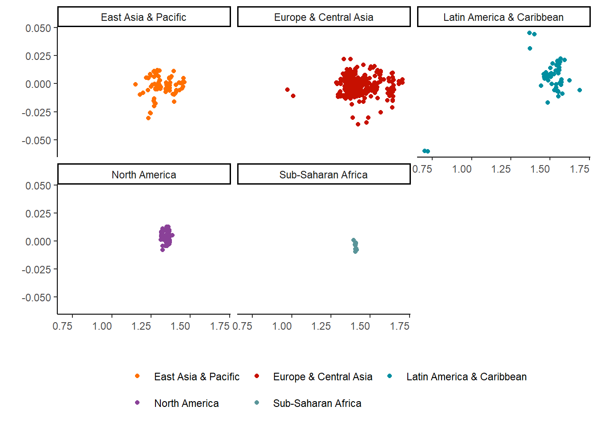

Apéndice
Apéndice A
El siguiente Apéndice resume aspectos metodológicos de la investigación
Variables
Tabla A.1: Variables, descripciones y fuentes
| Variable | Descripción | Fuente |
|---|---|---|
| Variable dependiente | ||
| Índice de Feminización de Densidad Sindical \(FUDi\) | Densidad sindical femenina en relación a la densidad sindical masculina | Elaboración propia en base a encuestas de hogares, datos administrativos y ICTWSS (2019) |
| Variable independiente | ||
| A. Cícilicas | ||
| Desempleo Femenino | Porcentaje anual de desocupadas del total de la fuerza de trabajo femenina, dejando afuera a ocupadas e inactivas del cálculo. | OECD (2020) Principales Indicadores Económicos para el desempleo |
| Salarios Mínimos | Los salarios mínimos reales por hora y anuales son los salarios mínimos legales convertidos en un salario común por hora y período de pago anual convertido en una unidad monetaria común utilizando las Paridades de Poder Adquisitivo (\(PPP\)) en dólares de los EE.UU. para los gastos de consumo privado | OECD (2020) Principales Indicadores Económicos de salarios |
| B. Estructuales | ||
| Participación Laboral Feminina | Total de fuerza de trabajo femenina dividida por el total de mujeres en edad de trabajar, la cual depende de los países, pero en general esta va desde los 15 a los 64 años. | OECD (2020) Encuestas a Fuerza de Trabajo (LFS) |
| Sector servicios | Tasa anual de la fuerza de trabajo en el sector servicios, es decir, en las actividades de las secciones económicas que van de la G a la U en ISIC rev.4 | Estimaciones de ILO (2019) y Banco Mundial (2019) |
| Empleo parcial | Porcentaje de trabajadores parciales en el total de los asalariados de cada país. Esta es una medida que varía según la definición del empleo parcial para cada país, pero en general se define por jornadas que van entre 30 a 35 horas por semanas. | OECD (2020) Encuestas a Fuerza de Trabajo (LFS) |
| C. Institucionales | ||
| Coordinación | Coordinación de los salarios medida en 5 niveles: (5) Normas vinculantes relativas a las tasas de salario máximo o mínimo o a los aumentos de salario emitidas como resultado de a) la negociación centralizada por la central sindical y las asociaciones patronales, con o sin la participación del gobierno, o b) la imposición unilateral por el gobierno de un plan o congelación de salarios, con o sin consulta y negociación previas con los sindicatos y/o las asociaciones patronales.(4) Normas y/o directrices no vinculantes (recomendaciones sobre tasas de salarios máximos o mínimos o aumentos salariales) emitidas por a) el gobierno o el organismo gubernamental, y/o la central sindical y las asociaciones patronales (juntas o solas), o b) resultantes de un establecimiento de patrones extensos y regularizados junto con un alto grado de concentración y autoridad sindical.(3) Directrices de procedimiento para la negociación (recomendaciones sobre, por ejemplo, la fórmula de demanda salarial relativa a la productividad o la inflación) emitidas por a) el gobierno o el organismo gubernamental, y/o el sindicato central y las asociaciones de empleadores (juntos o solos), o b) resultantes de una fijación de pautas extensiva y regularizada junto con un alto grado de concentración y autoridad sindical.(2) Cierta coordinación de la fijación de salarios, basada en la fijación de patrones por parte de las principales empresas, sectores, políticas salariales del gobierno en el sector público, adjudicaciones judiciales o políticas de salario mínimo.(1) Negociación salarial fragmentada, limitada en gran medida a empresas o plantas individuales, sin coordinación | ICTWSS (2019) |
| D. Control | ||
| Ajuste de la Negociación Colectiva | Empleados cubiertos por acuerdos de negociación colectiva (salariales) válidos como proporción de todos los asalariados con derecho a negociar, expresada como porcentaje. Esta está ajustada para tener en cuenta la probabilidad de que algunos sectores u ocupaciones queden excluidos del derecho a negociar | ICTWSS (2019) |
| Densidad Sindical | Densidad sindical del año anterior, esto es, membresía sindical en proporción a todos los asalariados del año anterior disponible | ICTWSS-@visser2019 |
Apéndice B
Acrónimos
CUT: Central Única de Trabajadores de Chile
FETRACALL: Federación de Trabajadores de Call Cener en Chile.
FESINTRACAP: Federación Nacional de Sindicatos de Trabajadoras de Casa Particular.
ICTWSS: Base de Datis de Características Insititucionales de los Sindicatos, Coordinación Salarial, Intervención Estatal y Pactos Sociales (o en inglés, Institutional Characteristics of Trade Unions, Wage Setting, State Intervention and Social Pacts)
ISIC: Clasificación Industrial Estándar Internacional de las Naciones Unidas. En este estudio se hace referencia a la revisión 4 de esta clasificación.
NCW: National Council of Women of Services of New Zealand o Consejo Nacional de Mujeres de los Servicios de Nueva Zelanda
NZNO: New Zealand Nurses Organisation, o en español, Organización de Enfermeras de Nueva Zelanda
NZCTU: Consejo de los Sindicatos de Nueva Zelanda, o en inglés, New Zealand Council of Trade Unions que esta constituido por una estructura con un “Consejo de Mujeres”
OECD: Organización para la Cooperación y Desarrollo (o en inglés, Organisation for Economic Co-operation and Development - OECD)
OIT: Organización Internacional del Trabajo (o en inglés, Internacional Labour Organization -ILO )
PTWL: Ley de Trabajo Parcial en Japón
SFWU: Service & Food Workers Union, o en español, Sindicato de Trabajadores de la Alimentación de Nueva Zelanda
[UNAMA]: Unión Nacional de Manipuladoras de Alimentos de Chile. Otras federación o confederaciones son la Federación Nacional de Manipuladoras de Alimentos (FENAMA) y Federación de Manipuladoras de Alimentos de Chile (FEMACh)
WTUL: Women’s Trade Union League es una organización de la clase trabajadora que reune a las mujeres sindicalistas. Su raíz está en el WTUL británico, pero también estuvo presente en los Estados Unidos.
Apéndice C
Tabla C.1 Modelos Panel con Corrección de Error (ECMs) para predecir la sindicalización feminizada en 45 países, 1980-2018, Efectos Fijos [\(^{a,b,c}\)]
| Modelo 0 | Model 0 (b) | |
|---|---|---|
| diff. Fem. Desempleo | -0.01 | -0.01 |
| (0.10) | (0.11) | |
| Fem. Participación Laboral | 0.26*** | 0.26* |
| (0.07) | (0.13) | |
| Fem. Sector Servicios | 1.20*** | 1.20*** |
| (0.10) | (0.18) | |
| Fem. Incidencia empleo part-time | -0.03*** | -0.03*** |
| (0.01) | (0.01) | |
| Coordinación Salarial | -0.04*** | -0.04*** |
| (0.01) | (0.01) | |
| Productividad laboral | 0.01* | 0.01· |
| (0.00) | (0.01) | |
| Salarios Mínimos Reales | -0.00*** | -0.00*** |
| (0.00) | (0.00) | |
| Dickey-Fuller | -9.8611** | |
| Durbin-Watson | 4.3392*** | |
| R2 | 0.35 | |
| Adj. R2 | 0.27 | |
| Num. obs. | 499 | |
| \(^{***}\) p < 0.001; \(^{**}\) p < 0.01; \(^{*}\) p < 0.05 ; \(^{.}\) p < 0.1 Nota: a. Variables incluidas en el modelo pero no son mostradas son efectos fijos por países y controles estadísticos como densidad sindical nacional y cobertura de la negociación colectiva; b. Modelo con errores corregidos específicamente para panel desbalanceado, por método de Beck y Katz (1995) (Panel Cluster Error Correction); c. Coeficientes son estadísticamente significativos según test de Wald (test de dos colas) | ||
Tabla C.2 Modelos Panel Autoregresivos con Error de Corrección para predecir la sindicalización feminizada en 45 países, 1980-2018, Efectos Fijos [\(^{a,b,c}\)]
| Modelo 1 | Model 1 (b) | |
|---|---|---|
| diff. Fem. Desempleo | -0.01 | -0.01 |
| (0.02) | (0.02) | |
| Fem. Participación Laboral | 0.02 | 0.02 |
| (0.01) | (0.01) | |
| Fem. Sector Servicios | 0.05* | 0.05* |
| (0.02) | (0.02) | |
| Fem. Incidencia empleo part-time | 0.00 | 0.00 |
| (0.00) | (0.00) | |
| Coordinación Salarial | -0.00* | -0.00** |
| (0.00) | (0.00) | |
| Productividad laboral | -0.00· | -0.00 |
| (0.00) | (0.00) | |
| Salarios Mínimos Reales | 0.00 | 0.00 |
| (0.00) | (0.00) | |
| Lag(FUDi) | 0.97*** | 0.97*** |
| (0.01) | (0.01) | |
| Dickey-Fuller | -7.2691** | |
| Durbin-Watson | 0.31426 | |
| R2 | 0.98 | |
| Adj. R2 | 0.97 | |
| Num. obs. | 499 | |
| \(^{***}\) p < 0.001; \(^{**}\) p < 0.01; \(^{*}\) p < 0.05 ; \(^{.}\) p < 0.1 Nota: a. Variables incluidas en el modelo pero no son mostradas son efectos fijos por países y controles estadísticos como densidad sindical nacional y cobertura de la negociación colectiva; b. Modelo autoregresivo de primer orden con errores corregidos específicamente para panel desbalanceado, por método de Beck y Katz (1995) (Panel Cluster Error Correction); c. Coeficientes son estadísticamente significativos según test de Wald (test de dos colas) | ||
Tabla C.3 Test de Causalidad de Granger
| Predictores | Granger test - Causalidad |
|---|---|
| Feminización Desempleo | 5.332725 \(^{***}\) |
| Productividad laboral | 0.8101262\(^{*}\) |
| Salarios Mínimos Reales | Multicolineal |
| Feminización | 3.47816\(^{***}\) |
| Feminización Sector Servicios | 1.486648\(^{**}\) |
| Feminización Empleo Parcial | 1.1482\(^{.}\) |
| Coordinación Salarial | Multicolineal |
| Cobertura Negociación Colectiva | 47.69182\(^{***}\) |
| Densidad sindical | 4.339187\(^{***}\) |
\(^{***}\) p < 0.001; \(^{**}\) p < 0.01; \(^{*}\) p < 0.05 ; \(^{.}\) p < 0.1
 Figura C.1 Valores predichos de la variación de la feminización sindical según feminización del sector servicios. Los colores indican cada una de las divisiones regionales utilizadas por el Banco Mundial